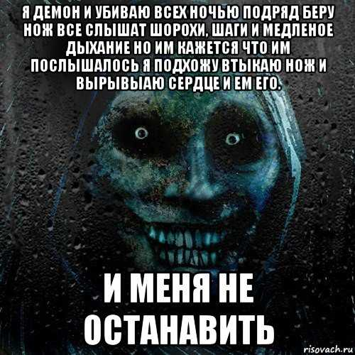
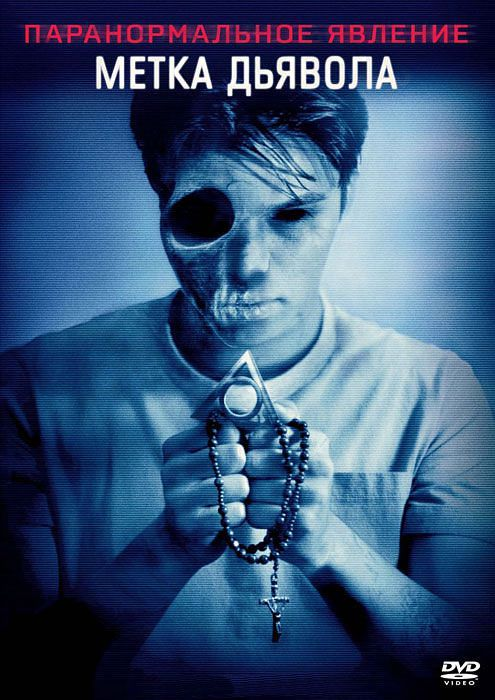

Я живу в Приуралье и с поздней весны по раннюю осень часто приезжаю к близким родственникам в глухую деревню на несколько дней, чтобы провести астрономические наблюдения. Деревня настолько глухая, что по ночам тут почти нигде нет света, а если отъехать на несколько километров в сторону мглистых уральских гор, то уровень искусственной засветки и вовсе мизерный, что очень важно для астрофотографии, чтобы не портить динамический диапазон фоном. Возле деревни в советское время неподалеку было коневодческое хозяйство, сейчас там все заброшено и поросло бурьяном. В 90-е там было изнасиловано и убито несколько местных девушек. Преступника ловили недолго — им оказался бывший председатель колхоза. Его поймали, а местные мужики спалили его дом и ферму. Народу в селе мало и год от года все меньше, но слишком уж проблемных хулиганов и забулдыг вроде нет.
Так как в округе мужики все спокойные, да и диких животных давненько не видели, обычно я наблюдаю один. Ближе к вечеру, когда становится окончательно ясно насчет видимости, я собираю свой небольшой фотонабор с нетбуком, сую в рюкзак фонарик, топор, свежие тёплые домашние пирожки на закуску да термос с кофе, и уже ближе к ночи сажусь на велосипед и еду в сторону леса по пыльной грунтованной дороге. За лесом открывается холмистое поле, местами украшенное деревьями, на востоке у горизонта переходящее в синюю полоску гор; на юге же есть то ли озерцо, то ли болотце. Раньше там, говорят, любили бултыхаться и рыбачить деревенские мальчишки, но после нескольких несчастных случаев (деревенские бабки рассказывали об этом со страхом в голосе) место стали избегать стороной. В низинах обычно стоит сырость, и по вечерам оттуда поднимаются красивые клубы ватного пара.
Так было и в тот раз. Я уже приехал на свое обычное место и уселся отдыхать. Вокруг кружили стрекозы и прочие насекомые, чистый природный воздух, скрашенный пряными ароматами полевых трав и цветов, как всегда, приятно ударил в ноздри. Темнело, загорались первые звезды: сначала Вега, потом Денеб — всё, как всегда. Разложив экипировку и пристроив топорик на всякий случай неподалёку, я выровнял наводку на Полярную, направил объектив, подключил нетбук и камеру и запустил фотосессию. Все снимается автоматически, поэтому после этих приготовлений я просто сел на надувную подушку и стал смотреть на звезды.
 
Минуты сменялись часами, и вот уже настало три часа ночи. Ни единого лучика света вокруг не было, кроме как от моей электроники. Я решил перекусить, налил в кружку кофе, достал еще тепленький пирожок и только-только откусил первый кусок от него, как где-то вдалеке раздался громкий всплеск. «Должно быть, бревно упало в то небольшое озерце на юге», — подумал я и продолжил трапезу. Прошло минут двадцать. Доедая последний пирожок, я услышал какое-то громкое хлюпанье и шелест совсем рядом с собой.Комок тут же застрял в горле. Я отбросил в сторону остатки еды и кинулся в сторону монтировки — туда, где был выключенный фонарь и топорик. Тихий шелест за пару секунд стал довольно громким, стало доносится угрожающее утробное урчание и сопение. Я схватил фонарь левой, а топор правой рукой и отскочил еще на пару метров в сторону, включая фонарь и разворачиваясь по направлению к предполагаемому врагу. Луч света выхватил из темноты двухметровую нечеловеческую фигуру. У него была серая, словно бы сомовья, кожа, покрытая серо-зеленой слизью, и огромная зубастая пасть с усами, свисающими по обе стороны от неё. Это существо стремительно приближалось ко мне, раззевая пасть все шире, явно намереваясь откусить мне голову! Я что есть мочи замахнулся топором и ударил гадину по голове, засадив топорик на пару-тройку сантиметров. Тварь оглушающе заревела и отшвырнула меня прочь своим то ли рукой, то ли ластами. Пока я несколько мгновений приходил в себя от удара, а потом полз в сторону велосипеда, чудовище продолжало реветь и крушить остатки моего оборудования, пытаясь избавиться от топора в голове.
Я вскочил на велосипед и что есть мочи дал ходу — и в самое время, ибо адское создание смогло, судя по звукам, избавиться от топорика, и направилось снова ко мне. Я крутил педали изо всех сил, но тварь не остставала. Я уже был в лесу, а за спиной продолжало слышаться тяжелое сомовье сопение и треск веток под его тяжелой тушей.
Меня нашли на рассвете изнеможенным за 20 километров от села в другом поселке. Я рассказал все местным милиционерам, и мы вместе поехали обратно осмотреть место происшествия (хотя я и сопротивлялся). Чудовище, слава Богу, не нашли, но по крайней мере увидели разнесённое в хлам оборудование и поняли, что я не шучу.
Казалось бы, прошло уже несколько лет с тех пор, и пора все забыть — а я не могу.
Страшные рассказы >>>